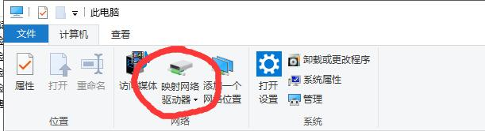
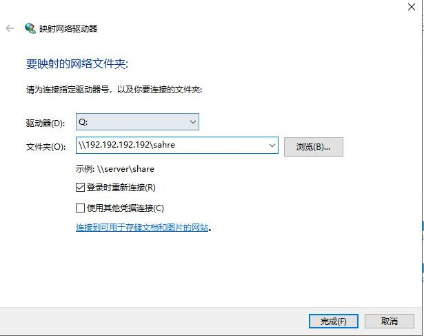

<!DOCTYPE html>
<html lang="zh" class="loading">
<head><meta name="generator" content="Hexo 3.9.0">
    <meta charset="UTF-8">
    <meta http-equiv="X-UA-Compatible" content="IE=edge,chrome=1">
    <meta name="viewport" content="width=device-width, minimum-scale=1.0, maximum-scale=1.0, user-scalable=no">
    <title>Samba服务的安装与各类问题小记 - WhiteRobe&#39;s Blog</title>
    <meta name="apple-mobile-web-app-capable" content="yes">
    <meta name="apple-mobile-web-app-status-bar-style" content="black-translucent">
    <meta name="google" content="notranslate">
    <link href="https://cdnjs.cloudflare.com/ajax/libs/KaTeX/0.11.0/katex.min.css" rel="stylesheet">
    <meta name="keywords" content="WhiteRobe, Blog,"> 
    <meta name="description" content="着眼实例，从最简单的开始；你觉得再简单不过的东西，或许在别人眼里那就是悬崖。而我，愿作那攀岩绳。, 基础概念
Samba是在Linux和UNIX系统上实现SMB协议的一个免费软件，由服务器及客户端程序构成。实际上也被用于Windows对Linux的文件进行共享。
 Linux搭建samba服务
,"> 
    <meta name="author" content="WhiteRobe"> 
    <link rel="alternative" href="atom.xml" title="WhiteRobe&#39;s Blog" type="application/atom+xml"> 
    <link rel="icon" href="/img/favicon.png"> 
    <link rel="stylesheet" href="//cdn.jsdelivr.net/npm/gitalk@1/dist/gitalk.css">
    <link rel="stylesheet" href="/css/animate.css">
    <link rel="stylesheet" href="/css/fira_code.css">
    <link rel="stylesheet" href="/css/diaspora.css">
    <script async src="https://busuanzi.ibruce.info/busuanzi/2.3/busuanzi.pure.mini.js"></script>
    
        <!--站内搜索API-->
        <script src="https://cdn.jsdelivr.net/algoliasearch/3/algoliasearch.min.js"></script>
        <link rel="stylesheet" href="https://cdn.jsdelivr.net/npm/instantsearch.css@7.3.1/themes/algolia-min.css" integrity="sha256-HB49n/BZjuqiCtQQf49OdZn63XuKFaxcIHWf0HNKte8=" crossorigin="anonymous">
        <script src="https://cdn.jsdelivr.net/npm/instantsearch.js@3.4.0/dist/instantsearch.production.min.js" integrity="sha256-pM0n88cBFRHpSn0N26ETsQdwpA7WAXJDvkHeCLh3ujI=" crossorigin="anonymous"></script>
    
    <!-- <script async src="//pagead2.googlesyndication.com/pagead/js/adsbygoogle.js"></script>
    <script>
          // No more ads!
         (adsbygoogle = window.adsbygoogle || []).push({
              google_ad_client: "ca-pub-8691406134231910",
              enable_page_level_ads: true
         });
    </script>
    <script async custom-element="amp-auto-ads"
        src="https://cdn.ampproject.org/v0/amp-auto-ads-0.1.js">
    </script> -->
</head>
</html>
<body class="loading">
    <span id="config-title" style="display:none">WhiteRobe&#39;s Blog</span>
    <div id="loader"></div>
    <div id="single">
    <div id="top" style="display: block; display: block;position: fixed; top: 0px;">
    <div class="bar" style="width: 0;"></div>
    <a class="icon-home image-icon" href="javascript:;" data-url="https://blog.whiterobe.top"></a>
    <div title="播放/暂停" class="icon-play"></div>
    <h3 class="subtitle">Samba服务的安装与各类问题小记</h3>
    <div class="social">
        <!--<div class="like-icon">-->
            <!--<a href="javascript:;" class="likeThis active"><span class="icon-like"></span><span class="count">76</span></a>-->
        <!--</div>-->
        <div style="font-size: 1rem;margin-right: -10px">
          分享此文：
        </div>
        <div>
          <div class="share">
              <a title="获取文章地址二维码" class="icon-scan" href="javascript:;"></a>
          </div>
          <div id="qr"></div>
        </div>
    </div>
    <div class="scrollbar"></div>
</div>

    <div class="section" style="margin-top: 50px">
        <div class="article">
    <div class='main'>
        <h1 class="title">Samba服务的安装与各类问题小记</h1>
        <div class="stuff">
            <span>九月 15, 2019</span>
            <span id="busuanzi_container_page_pv" class="busuanzi_page" style="display:none">本文总阅读量<div id="busuanzi_value_page_pv" style="display: inline;">1</div>次</span>
            
  <ul class="post-tags-list"><li class="post-tags-list-item"><a class="post-tags-list-link" href="/tags/Linux/">Linux</a></li></ul>


        </div>
        <div class="low-resolution-warn-info">当前设备屏幕尺寸过小，推荐使用PC模式浏览。</div>
        <div class="content markdown">
            <h1 id="基础概念"><a class="markdownIt-Anchor" href="#基础概念"></a> 基础概念</h1>
<p>Samba是在Linux和UNIX系统上实现SMB协议的一个免费软件，由服务器及客户端程序构成。实际上也被用于Windows对Linux的文件进行共享。</p>
<h1 id="linux搭建samba服务"><a class="markdownIt-Anchor" href="#linux搭建samba服务"></a> Linux搭建samba服务</h1>
<p>以Ubuntu 16.04为例子：</p>
<ol>
<li>首先更新一下仓库源以避免各种玄学bug：</li>
</ol>
<figure class="highlight shell"><table><tr><td class="gutter"><pre><span class="line">1</span><br></pre></td><td class="code"><pre><span class="line">apt-get update</span><br></pre></td></tr></table></figure>
<ol start="2">
<li>安装samba服务</li>
</ol>
<figure class="highlight shell"><table><tr><td class="gutter"><pre><span class="line">1</span><br></pre></td><td class="code"><pre><span class="line">apt-get install samba</span><br></pre></td></tr></table></figure>
<ol start="3">
<li>给定samba配置</li>
</ol>
<figure class="highlight shell"><table><tr><td class="gutter"><pre><span class="line">1</span><br></pre></td><td class="code"><pre><span class="line">vim /etc/samba/smb.conf</span><br></pre></td></tr></table></figure>
<p>添加以下内容：</p>
<figure class="highlight plain"><table><tr><td class="gutter"><pre><span class="line">1</span><br><span class="line">2</span><br><span class="line">3</span><br><span class="line">4</span><br><span class="line">5</span><br><span class="line">6</span><br><span class="line">7</span><br><span class="line">8</span><br><span class="line">9</span><br><span class="line">10</span><br><span class="line">11</span><br><span class="line">12</span><br></pre></td><td class="code"><pre><span class="line">[share]</span><br><span class="line">   comment = share folder</span><br><span class="line">   path = /data/share-folder</span><br><span class="line">   create mask = 0700</span><br><span class="line">   force create mode = 0700</span><br><span class="line">   directory mask = 0700</span><br><span class="line">   force directory mode = 0700</span><br><span class="line">   force group = sambas</span><br><span class="line">   public = no</span><br><span class="line">   available = yes</span><br><span class="line">   writable = yes</span><br><span class="line">   browseable = yes</span><br></pre></td></tr></table></figure>
<p>该配置文件指定了以下内容：</p>
<ul>
<li>访问该服务的必需位于<code>sambas</code>用户组里。(禁止无密码访问)</li>
<li>这些用户对共享文件夹里的东西可读可写。</li>
<li>共享文件夹位于<code>/data/share-folder</code>，映射地址为<code>/share</code>。</li>
<li>新建的文件和文件夹的权限均为<code>700</code>，即拥有者才可读可写可执行。</li>
</ul>
<blockquote>
<p><strong>Tips</strong>:<br>
添加<code>sambas</code>用户组：<code>groupadd sambas</code><br>
把一个用户加入该用户组：<code>useradd -aG sambas &lt;user-name&gt;</code></p>
</blockquote>
<ol start="4">
<li>添加samba密码:</li>
</ol>
<p>(假设要为一个名为<code>bai</code>的Linux用户开通samba服务)</p>
<figure class="highlight shell"><table><tr><td class="gutter"><pre><span class="line">1</span><br></pre></td><td class="code"><pre><span class="line">smbpasswd bai</span><br></pre></td></tr></table></figure>
<ol start="5">
<li>重启samba服务以应用配置项：</li>
</ol>
<figure class="highlight shell"><table><tr><td class="gutter"><pre><span class="line">1</span><br></pre></td><td class="code"><pre><span class="line">service smbd restart</span><br></pre></td></tr></table></figure>
<hr>
<p>其它一些杂项：</p>
<ul>
<li>smb默认走的是<strong>139</strong>端口，有些网络里139被ban掉了，可以在<code>/etc/samba/smb.conf</code>中的<code>[global]字段下添加``smb ports = 1399</code>，手动设定服务开放的端口(比如此时设为1399)。</li>
<li>windows可以使用<code>telnet &lt;IP&gt; &lt;PORT&gt;</code>来测试指定的端口是否通畅；否则请检查samba服务是否正常运行或是否防火墙有所限制。</li>
</ul>
<h1 id="客户端访问"><a class="markdownIt-Anchor" href="#客户端访问"></a> 客户端访问</h1>
<h2 id="linux客户机"><a class="markdownIt-Anchor" href="#linux客户机"></a> Linux客户机</h2>
<p>以用户<code>bai</code>和其密码<code>baibai</code>为例，若此时samba服务走的是1399端口、运行在IP<code>192.192.192.192</code>、映射的目录是<code>/share</code>：</p>
<figure class="highlight shell"><table><tr><td class="gutter"><pre><span class="line">1</span><br><span class="line">2</span><br></pre></td><td class="code"><pre><span class="line">mkdir /home/remote-share</span><br><span class="line">sudo mount -t cifs -o username=bai,password=baibai,port=1399 //192.192.192.192/share /home/remote-share</span><br></pre></td></tr></table></figure>
<p>就会把远程的文件夹挂载到<code>/home/remote-share</code>目录下。</p>
<blockquote>
<p>取消挂载请执行指令：<code>sudo umount /data/remote-share</code>。</p>
</blockquote>
<p>但是这个挂载一旦机器重启就会失效，所以还要固化这个过程：</p>
<figure class="highlight shell"><table><tr><td class="gutter"><pre><span class="line">1</span><br></pre></td><td class="code"><pre><span class="line">vim /etc/fstab</span><br></pre></td></tr></table></figure>
<p>添加一行：</p>
<figure class="highlight shell"><table><tr><td class="gutter"><pre><span class="line">1</span><br></pre></td><td class="code"><pre><span class="line">//192.192.192.192/share /home/remote-share cifs username=bai,password=baibai,port=1399 0 0</span><br></pre></td></tr></table></figure>
<p>进行挂载测试：</p>
<figure class="highlight shell"><table><tr><td class="gutter"><pre><span class="line">1</span><br></pre></td><td class="code"><pre><span class="line">mount -a</span><br></pre></td></tr></table></figure>
<h2 id="windows客户机"><a class="markdownIt-Anchor" href="#windows客户机"></a> Windows客户机</h2>
<blockquote>
<p>要注意的是，Windows默认走139端口且无特殊方法可进行修改；因此，如有必要的话，请利用端口转发等奇技淫巧来实现对不同端口的samba服务进行对接。</p>
</blockquote>
<p>打开我的电脑-映射网络驱动器：</p>
<p align="center">
  
</p>
<p>配置盘符并用samba账户登录：</p>
<p align="center">
  
</p>
<h1 id="其它的一些奇技淫巧"><a class="markdownIt-Anchor" href="#其它的一些奇技淫巧"></a> 其它的一些奇技淫巧</h1>
<p>事实上，139由于之前的勒索病毒问题被大规模不分青红皂白的封禁，所以在阿里云等服务商下是走不通的，解决办法在这里提供一些思路：(针对Windows或其它非Linux设备)</p>
<ol>
<li>利用Windows的<code>netsh interface portproxy</code>进行端口转发；</li>
<li>一样还是端口转发，但现在本机跑一个最小的虚拟机或docker镜像。利用<code>itables</code>指令即可，很简单——世界上最小的Linux镜像不过5mb，非常时候干这件事。</li>
<li>如果你有多台主机，在本地的局域网中开一个Linux系统(桥接机)，挂载云端的非139端口的映射目录；在这个桥接机上把这个挂载了云端映射目录再的目录再次通过samba的139标准端口开放。需要注意的是，需要在桥接机上以root用户登录samba服务，才能修改云端的共享文件夹。</li>
</ol>

            <!--[if lt IE 9]><script>document.createElement('audio');</script><![endif]-->
            <audio id="audio" loop="1" preload="auto" controls="controls" data-autoplay="false">
                <source type="audio/mpeg" src="">
            </audio>
            
                <ul id="audio-list" style="display:none">
                    
                        
                            <li title='0' data-url='https://gitee.com/shenpibaipao/wr-diaspora/raw/master/source/audio/jinyecheng.mp3'></li>
                        
                    
                        
                            <li title='1' data-url='https://gitee.com/shenpibaipao/wr-diaspora/raw/master/source/audio/juhuatai.mp3'></li>
                        
                    
                        
                            <li title='2' data-url='https://gitee.com/shenpibaipao/wr-diaspora/raw/master/source/audio/MapleStory.mp3'></li>
                        
                    
                </ul>
            
        </div>
        
    <div id='gitalk-container' class="comment link"
        data-ae='true'
        data-ci='5b763306cd7b9d9c3981'
        data-cs='c31e9bf78a807055f5439caea747b09d1d9c8f18'
        data-r='image-blog.io'
        data-o='WhiteRobe'
        data-a='WhiteRobe'
        data-d='false'
    >查看评论</div>


    </div>
    
        <div class='side'>
            <ol class="toc"><li class="toc-item toc-level-1"><a class="toc-link" href="#基础概念"><span class="toc-number">1.</span> <span class="toc-text"> 基础概念</span></a></li><li class="toc-item toc-level-1"><a class="toc-link" href="#linux搭建samba服务"><span class="toc-number">2.</span> <span class="toc-text"> Linux搭建samba服务</span></a></li><li class="toc-item toc-level-1"><a class="toc-link" href="#客户端访问"><span class="toc-number">3.</span> <span class="toc-text"> 客户端访问</span></a><ol class="toc-child"><li class="toc-item toc-level-2"><a class="toc-link" href="#linux客户机"><span class="toc-number">3.1.</span> <span class="toc-text"> Linux客户机</span></a></li><li class="toc-item toc-level-2"><a class="toc-link" href="#windows客户机"><span class="toc-number">3.2.</span> <span class="toc-text"> Windows客户机</span></a></li></ol></li><li class="toc-item toc-level-1"><a class="toc-link" href="#其它的一些奇技淫巧"><span class="toc-number">4.</span> <span class="toc-text"> 其它的一些奇技淫巧</span></a></li></ol>
        </div>
    
</div>


    </div>
    <!--下悬浮返回键-->
    <div style="background: white; height:30px; width: 30px; border-radius: 16px; position: fixed; bottom: 1.5rem; right: 1.5rem; border: 2px solid rgba(0, 0, 0, 0.5)">
      <a class="icon-left image-icon" style="left:4px; top:4px" href="javascript:history.back()"></a>
    </div>
</div>
</body>
<script src="//cdn.jsdelivr.net/npm/gitalk@1/dist/gitalk.min.js"></script>
<script src="//lib.baomitu.com/jquery/1.8.3/jquery.min.js"></script>
<script src="/js/plugin.js"></script>
<script src="/js/diaspora.js"></script>
<link rel="stylesheet" href="/photoswipe/photoswipe.css">
<link rel="stylesheet" href="/photoswipe/default-skin/default-skin.css">
<script src="/photoswipe/photoswipe.min.js"></script>
<script src="/photoswipe/photoswipe-ui-default.min.js"></script>

<!-- Root element of PhotoSwipe. Must have class pswp. -->
<div class="pswp" tabindex="-1" role="dialog" aria-hidden="true">
    <!-- Background of PhotoSwipe. 
         It's a separate element as animating opacity is faster than rgba(). -->
    <div class="pswp__bg"></div>
    <!-- Slides wrapper with overflow:hidden. -->
    <div class="pswp__scroll-wrap">
        <!-- Container that holds slides. 
            PhotoSwipe keeps only 3 of them in the DOM to save memory.
            Don't modify these 3 pswp__item elements, data is added later on. -->
        <div class="pswp__container">
            <div class="pswp__item"></div>
            <div class="pswp__item"></div>
            <div class="pswp__item"></div>
        </div>
        <!-- Default (PhotoSwipeUI_Default) interface on top of sliding area. Can be changed. -->
        <div class="pswp__ui pswp__ui--hidden">
            <div class="pswp__top-bar">
                <!--  Controls are self-explanatory. Order can be changed. -->
                <div class="pswp__counter"></div>
                <button class="pswp__button pswp__button--close" title="Close (Esc)"></button>
                <button class="pswp__button pswp__button--share" title="Share"></button>
                <button class="pswp__button pswp__button--fs" title="Toggle fullscreen"></button>
                <button class="pswp__button pswp__button--zoom" title="Zoom in/out"></button>
                <!-- Preloader demo http://codepen.io/dimsemenov/pen/yyBWoR -->
                <!-- element will get class pswp__preloader--active when preloader is running -->
                <div class="pswp__preloader">
                    <div class="pswp__preloader__icn">
                      <div class="pswp__preloader__cut">
                        <div class="pswp__preloader__donut"></div>
                      </div>
                    </div>
                </div>
            </div>
            <div class="pswp__share-modal pswp__share-modal--hidden pswp__single-tap">
                <div class="pswp__share-tooltip"></div> 
            </div>
            <button class="pswp__button pswp__button--arrow--left" title="Previous (arrow left)">
            </button>
            <button class="pswp__button pswp__button--arrow--right" title="Next (arrow right)">
            </button>
            <div class="pswp__caption">
                <div class="pswp__caption__center"></div>
            </div>
        </div>
    </div>
</div>


</html>
